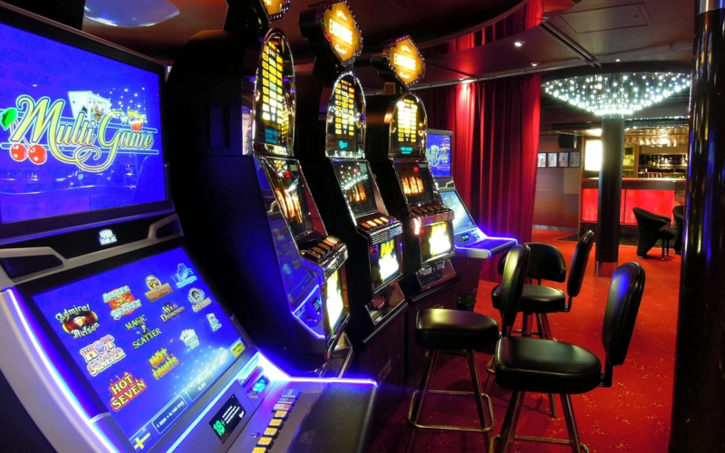

Traditional gambling Versus Online Gambling
A Review
Nowadays, gambling isn't tied to an activity that is purely recreational although it is now taking an innovative direction in industry and business. For some , it's a fun exercise, while for other, it's a profitable business. While gambling isn't at any time a new pastime that is gaining popularity in the current century, it was the preferred choice of our forefathers and historians trace to when the game was played to the prehistoric era. It is now known that even the earliest caveman gambled.
To a layman, gambling could refer to a sport that requires money as well as it is a simple way to increase the same. While being part of this game means that you have to bet on something or another. Situs Judi Slot Online Terpercaya There have been numerous instances in the past that did not just involve money and possessions were part of the sport, but also one's personal identity or the property of one's family members was staked.
Gambling in this century is taking an unidimensional view. With our fast-paced lives and the dwindling time available for everything, even leisure activities are limited to a certain time. In this modern age, Internet comfortably snuggles in and establishes a space on its own, making room for Online Gambling. In contrast to traditional gambling methods that require players to physically be present to gamble Online gambling offers us the convenience of playing from the comfort of our own homes or in a cafe.
To better understand the two types of gambling, let's take an in-depth look at the essential features of each. Traditional gambling is comprised of three kinds of games including table games as well as random games as well as gaming machines. The majority of the gambling categories require the exchange of physical cash , and then converting them into chips that are of different denominations and then used to play the game. The only type of game that does not require the convert money into chip is slot machines. In this case, the player has to insert a quarter into the machine, and then push the lever. There are still a few games where money is put in but it is usually restricted to games that have massive jackpots. The majority of these games have a minimum deposit amount is only to huge sum.

On contrary it is a fairly enjoyable way to play the game. It is evident that the main reason for its immense popularity lies in the speed of play and the possibility of having fun by pressing an icon. Additionally, in order to draw more gamblers to online casinos, the operators make their websites attractive by offering a variety of reward schemes as well as additional benefits for its players. There are a variety of games that are available by visiting the website. In essence, the games that are available on this kind of gaming are broadly classified into two groups where specific software has to be downloaded, the other that can be played without the software.
Comparative Analyse of traditional Gambling in conjunction with Online Gambling
While online gambling is growing in momentum but traditional gambling remains the clear leader in the field. The pros and cons are present to all forms of gambling, and it is based on the preferences of every gambler in the best form that meets their needs.
When you play traditional casino games, you will feel adrenaline rushing and tension on the nerves, this can be found in online gambling, to a certain extent. The thrill of winning and celebration can only be experienced in traditional gambling. The motivation behind playing it repeatedly is having fun and winning, providing a quick boost to the business for the casino proprietors. A single win can inspire thousands of others to continue playing the game. Therefore, if we look at the enjoyment, involvement and financial rewards of gambling, it is not a surprise that traditional gambling would be an interest in it.
The online gambling experience is, however can be enjoyed by every one of those who live in regions where access to casinos is not a reality. All you need is an internet connection and you're engaged in the excitement of the game. Situs Judi Slot Online Terpercaya It allows you to leverage the power in terms of space and time. Another benefit of gambling online could be the possibility to receive huge bonuses and payouts However, casinos have a catch of not paying all earned amount to force gamblers to play for a long time. The reason to make players bet for longer amounts of time is that generally, the longer you play , the odds of losing are higher and the casino owners earn higher profits margins.
When it comes to business, traditional gambling is advantageous to casino owners. They have all the equipment and strategies to let the gambler bet for a long period of time which results in increased odds to the advantage of casino owners. For gamblers, however, traditional forms of gambling can result in loss because the profits are less than what is actually that is earned. The payouts typically are typically five or six times the amount actually put at risk, however casinos pay less and consequently result in a loss that is visible.
Conclusion
The perception of a gamblers is a unique experience that cannot be measured by critics. Different forms of gambling could be viewed differently, but the pleasure that comes from sports can not be questioned in any kind of gambling.
However, gambling as a form of business could mean something completely different to casino operators. They'd have a completely different set of ideas in analyzing the two kinds of gambling.
In conclusion to sum up, both forms of gambling come with distinct benefits and drawbacks. Neither can be considered to be 100% perfect. It's entirely up to the player to select the various options that can satisfy their needs.